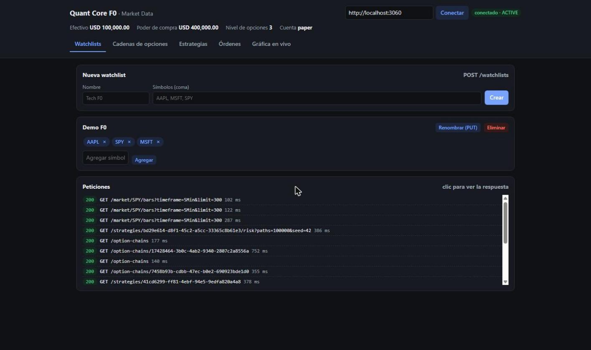
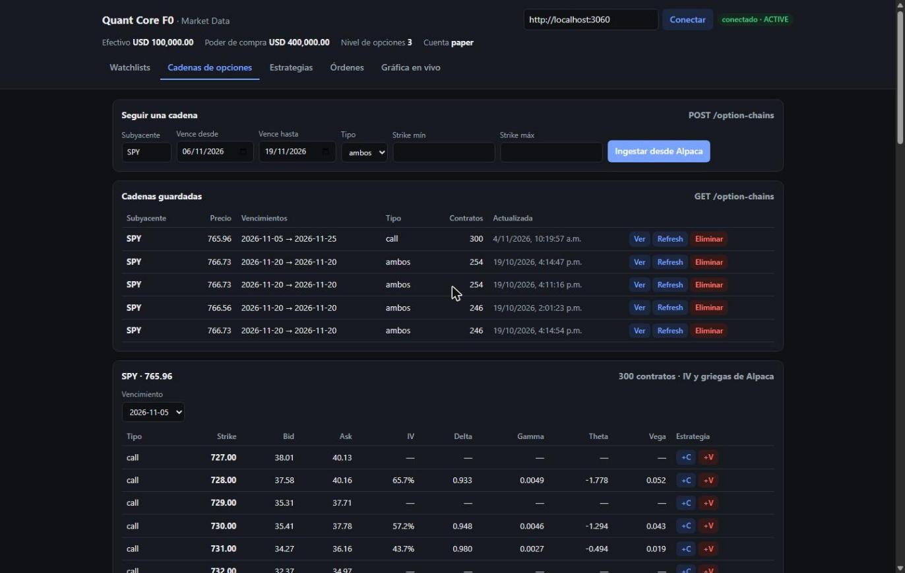
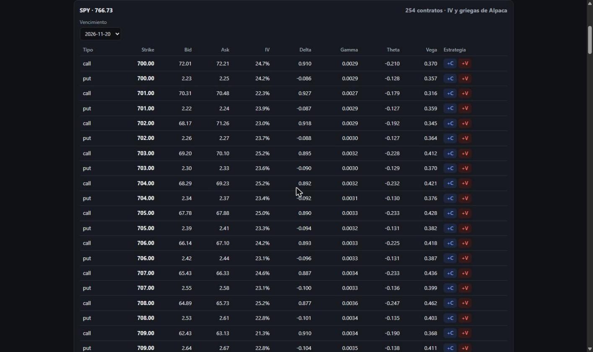
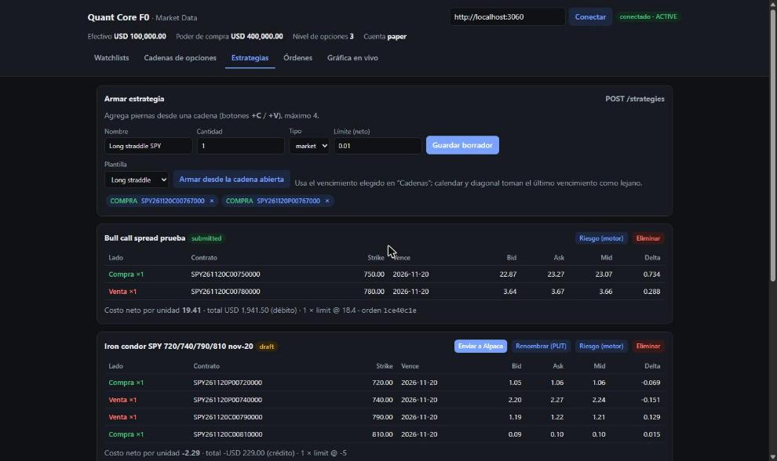
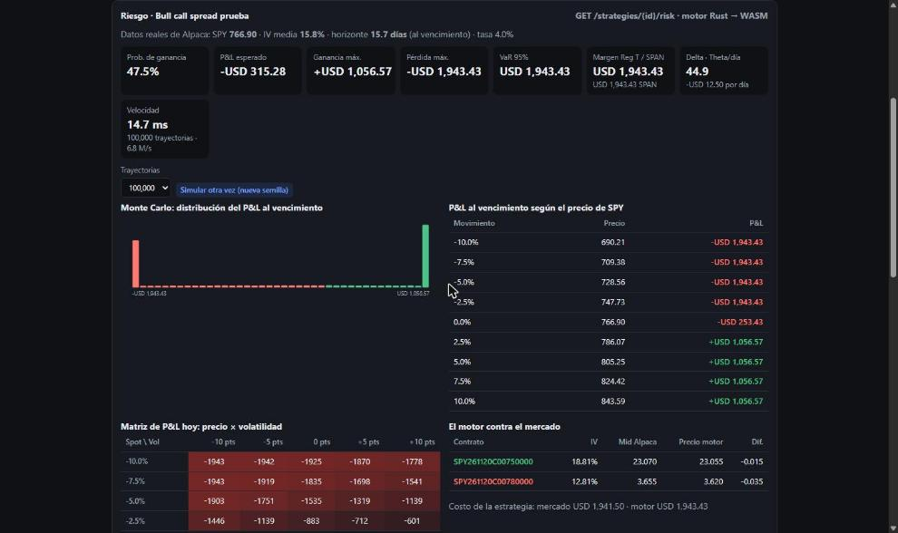
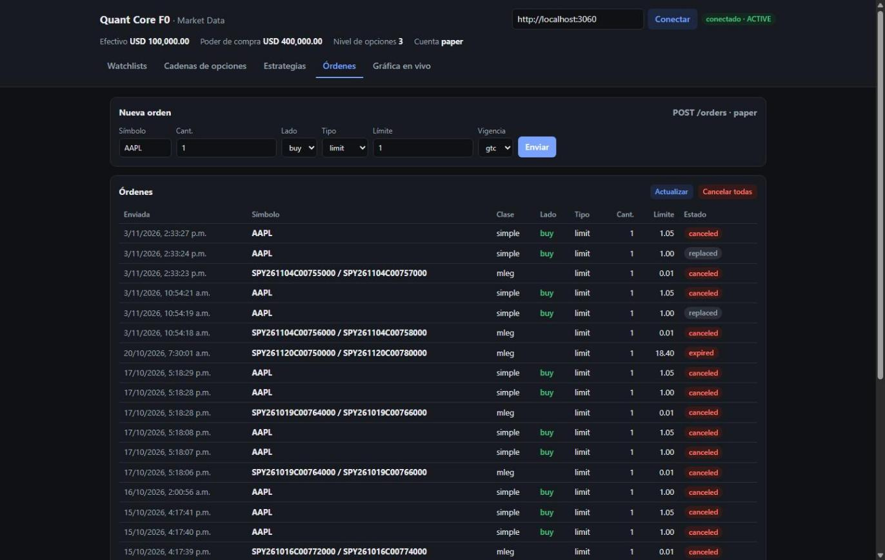
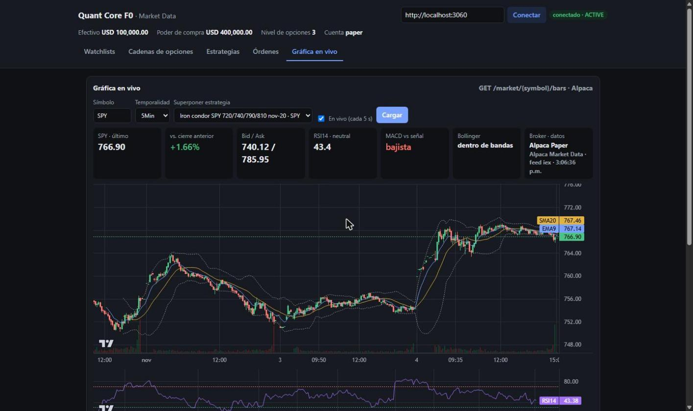
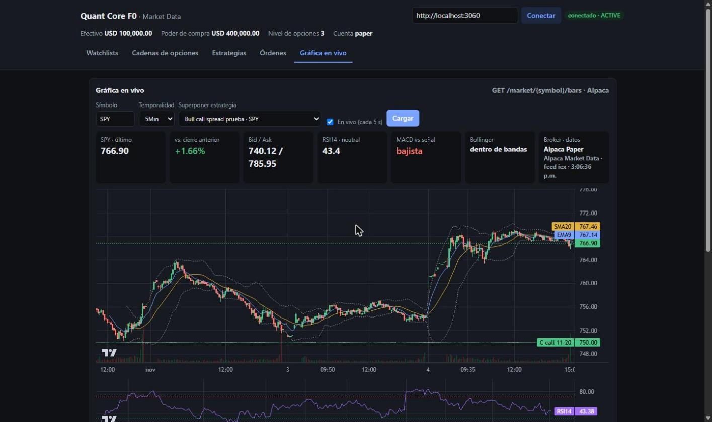
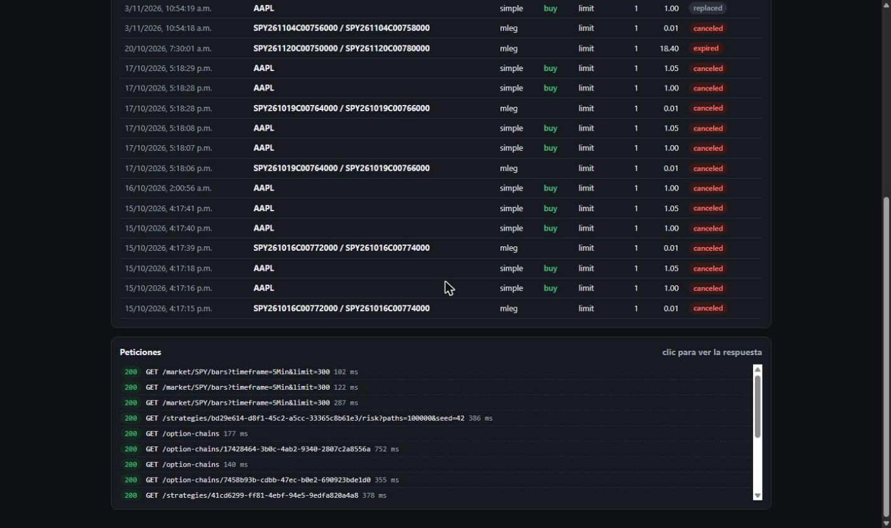

Una guía para quien no sabe nada de inversiones. Primero los conceptos básicos, luego cada botón y cada pestaña de la aplicación, con capturas reales y ejemplos con números.
Invertir es comprar algo hoy con la esperanza de que valga más mañana, para venderlo después y quedarte con la diferencia. Es lo mismo que comprar un tenis de edición limitada en 2,000 pesos esperando revenderlo en 3,000. La diferencia entre lo que pagaste y lo que te pagan después es tu ganancia (si es positiva) o tu pérdida (si es negativa).
Imagina una pizzería que vale 1,000,000 de pesos y que sus dueños la dividen en 1,000 pedacitos iguales. Cada pedacito vale 1,000 pesos. Quien compra un pedacito es dueño de una milésima parte de la pizzería. Ese pedacito se llama acción.
Con una empresa real es igual. Apple, por ejemplo, tiene millones de pedacitos y cada uno tiene su precio, que cambia cada segundo mientras la bolsa está abierta.
| Paso | Qué pasa | Tu dinero |
|---|---|---|
| 1 | Compras 1 acción cuando vale 100 USD. | Pagas 100 |
| 2a | Sube a 110 y la vendes. | Recibes 110 → ganaste 10 |
| 2b | En cambio, baja a 90 y la vendes. | Recibes 90 → perdiste 10 |
Eso es todo el negocio: compra barato, vende caro. El riesgo es que pase lo contrario.
AAPL, Microsoft es MSFT.SPY: un ETF famoso cuya canasta son las 500 empresas más grandes de Estados Unidos. Si a esas
empresas en conjunto les va bien, SPY sube. Es el ejemplo principal de esta aplicación, y en nuestras capturas vale unos 767 USD.Al comprar un celular usado en un tianguis, el vendedor pide 1,010 pesos, pero el comprador interesado solo ofrece 1,000. En la bolsa pasa igual, siempre hay dos precios:
| Nombre | Qué es | En el ejemplo |
|---|---|---|
| Ask (lo que piden) | El precio al que tú compras. Siempre es el más alto. | 1,010 |
| Bid (lo que ofrecen) | El precio al que tú vendes. Siempre es el más bajo. | 1,000 |
| Mid (medio) | El punto en medio. Se usa como "precio justo" de referencia. | 1,005 |
La diferencia entre ask y bid (10 pesos) es un costo escondido de operar: si compras y vendes de inmediato, pierdes esa diferencia.
Imagina que crees que SPY va a subir en las próximas dos semanas. SPY vale 767 USD cada uno. Para apostar con una cantidad "normal" de acciones, digamos 100, necesitarías 76,700 USD. Eso es mucho dinero para apostar a algo.
Una opción te deja apostar pagando solo una fracción (por ejemplo, 500 USD) a cambio de aceptar un trato con condiciones. Veámoslo con una historia.
Estás viendo un departamento que cuesta 1,000,000 y crees que en un mes valdrá más porque van a construir un metro cerca. No tienes el millón hoy. Entonces le dices al dueño:
«Te pago 10,000 ahora (no te los devuelvo) y a cambio me guardas el departamento a 1,000,000 durante un mes. Si dentro de un mes quiero comprarlo, tú me lo vendes a 1,000,000, valga lo que valga».
Pueden pasar dos cosas:
Eso es exactamente una opción: un derecho (no una obligación) de comprar o vender algo a un precio pactado, durante un tiempo limitado, que se compra pagando un anticipo no reembolsable.
| Palabra en opciones | En la historia del departamento | En SPY |
|---|---|---|
| Subyacente | El departamento (lo que se compra o vende) | SPY |
| Strike (precio pactado) | Los 1,000,000 acordados | Por ejemplo, 770 USD por acción |
| Vencimiento | El plazo de un mes | Una fecha, por ejemplo 20 de noviembre |
| Prima | Los 10,000 de anticipo | Por ejemplo, 5 USD por acción |
| Contrato | El papel firmado | 1 contrato = 100 acciones, así que la prima se multiplica ×100: 5 USD × 100 = 500 USD |
Una call es igual al apartado del departamento: el derecho de comprar a un precio fijo.
Ejemplo con números. SPY vale hoy 767. Compras una call con strike 770 que vence en 2 semanas. La prima es 5 USD, así que pagas 5 × 100 = 500 USD. Tienes el derecho de comprar 100 acciones de SPY a 770 cada una, pase lo que pase.
Al llegar el vencimiento, ¿cuánto valía SPY?
| SPY al vencimiento | ¿Qué valor tiene tu derecho? | Cuenta | Resultado |
|---|---|---|---|
| 760 (bajó) | 0. Nadie quiere comprar a 770 algo que vale 760. | 0 − 500 | pierdes 500 |
| 770 | 0. | 0 − 500 | pierdes 500 |
| 775 | (775 − 770) × 100 = 500 | 500 − 500 | quedas en 0 (equilibrio) |
| 780 (subió) | (780 − 770) × 100 = 1,000 | 1,000 − 500 | ganas 500 |
| 800 (subió mucho) | (800 − 770) × 100 = 3,000 | 3,000 − 500 | ganas 2,500 |
Fíjate en dos cosas: lo máximo que puedes perder son los 500 que pagaste, y lo que puedes ganar no tiene tope (mientras más suba, más ganas). Nota: en la práctica casi nadie "ejerce" el derecho; se vende el contrato antes de que venza.
Una put es lo contrario: el derecho de vender a un precio fijo. Es como un seguro: te protege si el precio cae.
Ejemplo con números. SPY vale 767. Compras una put con strike 760 y prima 4 USD → pagas 4 × 100 = 400 USD. Tienes el derecho de vender 100 acciones a 760 cada una, aunque valgan mucho menos.
| SPY al vencimiento | ¿Qué valor tiene tu derecho? | Cuenta | Resultado |
|---|---|---|---|
| 780 (subió) | 0. Nadie quiere vender a 760 algo que vale 780. | 0 − 400 | pierdes 400 |
| 760 | 0. | 0 − 400 | pierdes 400 |
| 740 (bajó) | (760 − 740) × 100 = 2,000 | 2,000 − 400 | ganas 1,600 |
Ganas cuando el precio baja. Lo máximo que puedes perder también son los 400 que pagaste.
Si tú compras una opción, alguien se la vende. Ese alguien es el dueño del departamento de la historia: cobró los 10,000 del apartado, pero ahora está obligado a venderte el departamento al precio acordado si tú lo pides.
Cuando una estrategia combina compras y ventas, la una compensa a la otra y el riesgo queda acotado. De eso tratan las "estrategias" (sección 7).
Comparas el strike con el precio actual:
| Call (derecho a comprar) | Put (derecho a vender) | |
|---|---|---|
| ITM "con valor" | strike menor que el precio actual (comprar barato lo que ya vale más) | strike mayor que el precio actual |
| ATM "en el precio" | strike casi igual al precio actual | |
| OTM "sin valor todavía" | strike mayor que el precio actual | strike menor que el precio actual |
Ejemplo con SPY a 767: la call 700 es ITM (puedes comprar a 700 algo que vale 767, por eso es cara: ~72 USD); la call 800 es OTM (barata). Las OTM cuestan poco pero necesitan que el precio se mueva mucho para dar ganancia.
En la aplicación cada contrato se llama algo como SPY261120C00750000. Parece código secreto, pero se lee por partes:
| SPY | 261120 | C | 00750000 |
|---|---|---|---|
| de qué es (el subyacente) | fecha de vencimiento: año 26, mes 11, día 20 | C = call (P = put) | el strike: 750.000 (el número × 1000) |
Léelo como: "call de SPY, strike 750, vence el 20 de noviembre de 2026". Y SPY261120P00740000 sería una put con strike 740, mismo día.
Son medidas que dicen "cuánto cambia el precio de la opción si cambia algo". Aparecen como columnas en la tabla de cadenas (captura en la sección 6).
| Columna | Qué mide | Cómo leerla (ejemplo real) |
|---|---|---|
| IV (volatilidad implícita) | Cuánto movimiento espera el mercado, en % anual. Más IV = opciones más caras. | Call 700: IV 24.7%. |
| Delta | Cuánto sube la opción si el subyacente sube 1 USD. También es una aproximación de la probabilidad de terminar ITM. | Call 700: 0.910. Si SPY sube 1 USD, la opción sube ≈ 0.91 USD. Las puts tienen delta negativa (put 700: −0.086). |
| Gamma | Cuánto cambia la delta cuando el subyacente se mueve 1 USD. | 0.0029: la delta casi no cambia. |
| Theta | Cuánto valor pierde la opción cada día solo por el paso del tiempo. | −0.210: pierde ≈ 0.21 USD por acción al día (21 USD por contrato). |
| Vega | Cuánto cambia la opción si la IV cambia 1 punto. | 0.370. |

El dinero líquido de la cuenta. Es lo que realmente tienes.
Cuánto puedes comprar o abrir en posiciones en total, contando el crédito (margen) que da el broker. En esta cuenta es 4 veces el efectivo. No es dinero tuyo: es una línea de crédito. Usarlo amplifica ganancias y pérdidas. Para una opción comprada basta con tener efectivo para pagar la prima; el poder de compra pesa más al vender opciones o al usar acciones con apalancamiento.
El broker limita qué estrategias puedes operar según tu experiencia y riesgo permitido. En Alpaca:
| Nivel | Qué permite |
|---|---|
| 0 | Opciones deshabilitadas. |
| 1 | Vender calls cubiertas y puts con efectivo de respaldo. |
| 2 | Lo anterior + comprar calls y puts. |
| 3 | Lo anterior + estrategias de varias piernas (spreads, straddles, condors). |
Esta cuenta tiene nivel 3, que es el necesario para todo lo que hace la pestaña Estrategias.
La aplicación web es solo la pantalla; los datos vienen de la API local en http://localhost:3060. El
botón Conectar vuelve a consultar la cuenta. "conectado · ACTIVE" significa que Alpaca respondió y la cuenta
está activa. Si aparece "sin conexión", la API no está corriendo (npm run dev en api/).
Una watchlist (lista de seguimiento) es una lista de símbolos que quieres vigilar. No compra nada ni cuesta nada: es como los favoritos del navegador, pero de activos. Se guarda en Alpaca y se refleja en Supabase.
| Acción | Qué hace | Petición |
|---|---|---|
| Crear (nombre + símbolos separados por coma) | Nueva lista | POST /watchlists |
| Agregar símbolo | Añade un ticker | POST /watchlists/{id}/symbols |
| × en una pastilla | Quita ese símbolo | DELETE …/symbols/{sym} |
| Renombrar (PUT) | Reemplaza nombre y símbolos | PUT /watchlists/{id} |
| Eliminar | Borra la lista | DELETE /watchlists/{id} |
¿Por qué existe en un proyecto de opciones? Es el primer recurso CRUD (crear, leer, actualizar, borrar) y sirve para elegir los subyacentes con los que vas a trabajar después.
El activo "de debajo" del que depende una opción. Una opción sobre SPY tiene a SPY como subyacente. Si SPY sube, las calls valen más; si baja, las puts valen más. En esta pestaña el campo Subyacente es el ticker del que quieres ver las opciones.
La cadena es la tabla con todos los contratos disponibles de un subyacente: cada strike, cada vencimiento, calls y puts, con sus precios y griegas. Es el "menú" de donde eliges lo que vas a combinar.

| Campo | Para qué sirve |
|---|---|
| Subyacente | El ticker (SPY por defecto). |
| Vence desde / hasta | Rango de fechas de vencimiento que quieres traer (por defecto mañana a +14 días). |
| Tipo | Solo calls, solo puts o ambos. |
| Strike mín / máx | Recorta los precios de ejercicio. Muy útil porque SPY tiene cientos de strikes. |
| Ingestar desde Alpaca | "Ingestar" = traer los datos de Alpaca y guardarlos en la base (Supabase). Máximo 300 contratos por cadena. |

Cómo leer la fila call 700: strike 700, bid 72.01 / ask 72.21, IV 24.7%, delta 0.910, gamma 0.0029, theta −0.210, vega 0.370. Tiene delta alta porque SPY (≈767) está muy por encima de 700: es una call muy ITM.
Los botones +C y +V agregan esa fila como pierna de una estrategia: +C = COMPRA (buy) y +V = VENTA (sell). Es una "C" de compra, no de call; cuidado con la confusión.
Si una fila muestra "—" en IV y griegas, Alpaca no devolvió esos datos para ese contrato (contratos poco negociados).
Combinar varias opciones a la vez (cada una es una "pierna") para obtener un perfil de ganancia/pérdida que una sola opción no da: limitar la pérdida, cobrar dinero si el mercado se queda quieto, apostar a que habrá un gran movimiento sin saber hacia dónde, etc. La aplicación permite hasta 4 piernas.
Camino manual:
Camino con plantilla: elige una plantilla y pulsa "Armar desde la cadena abierta".

Porque elegir a mano los contratos correctos de un straddle o un calendar es tedioso y se presta a errores (strike equivocado, vencimientos que no cuadran). La plantilla aplica la regla de la estrategia (por ejemplo "call y put en el strike más cercano al precio actual") sobre la cadena que tienes abierta. Estas son las que incluye:
| Plantilla | Qué arma | Para qué sirve |
|---|---|---|
| Long straddle | Compra 1 call + 1 put con el mismo strike (el más cercano al precio actual) y mismo vencimiento. | Apuestas a un movimiento grande, sin importar la dirección. Pierdes si el precio se queda quieto. |
| Short straddle | Lo mismo pero vendiendo. | Apuestas a que el precio se queda quieto. Riesgo grande si se mueve mucho. |
| Long strangle | Compra call y put fuera del dinero (delta ≈ 0.25), strikes distintos. | Como el straddle pero más barato; necesita un movimiento aún mayor. |
| Short strangle | Lo mismo vendiendo. | Cobras más margen de seguridad que el short straddle. |
| Calendar (calls) | Vende una call de vencimiento cercano y compra la call del mismo strike de vencimiento lejano. | Aprovecha que el tiempo erosiona más rápido la opción cercana. |
| Diagonal (calls) | Como el calendar pero la call vendida tiene otro strike (delta ≈ 0.30). | Variante del calendar con sesgo direccional. |
Calendar y diagonal necesitan una cadena con dos vencimientos o más; si no, la aplicación avisa. También avisa si abriste una cadena solo de calls y pides un straddle (necesita puts): ábrela con "Tipo: ambos".
Los nombres son convención del mercado, no de la aplicación:
Ejemplo real de la aplicación: COMPRA call 750 (mid 23.07) + VENTA call 780 (mid 3.66), vencimiento 20 nov, SPY ≈ 767.
La call vendida abarata la compra a cambio de renunciar a las ganancias por encima de 780.
La aplicación tiene guardado "Iron condor SPY 720/740/790/810" con 4 piernas:
| Pierna | Lado | Mid |
|---|---|---|
| Put 720 | Compra | 1.06 |
| Put 740 | Venta | 2.24 |
| Call 790 | Venta | 1.21 |
| Call 810 | Compra | 0.10 |
Cobras 2.24 + 1.21 y pagas 1.06 + 0.10 → crédito de 2.29 por acción = 229 USD (es ganancia máxima si SPY
termina entre 740 y 790). Las alas compradas (720 y 810) te protegen: la pérdida máxima es (740−720)×100 − 229 = 1,771 USD.
En la lista, el costo se muestra como -2.29 y la palabra crédito.
| Campo | Explicación |
|---|---|
| Nombre | Etiqueta tuya para reconocerla. |
| Cantidad | Cuántas veces repites toda la estrategia (1 = un contrato por pierna = 100 acciones). |
| Tipo: limit / market | market: ejecuta al precio que haya ahora (rápido, pero no controlas el precio). limit: solo ejecuta a tu precio o mejor (controlas el precio, pero quizá nunca se llene). |
| Límite (neto) | El precio máximo que aceptas pagar (positivo) o el mínimo que aceptas cobrar (con
signo negativo), sumando todas las piernas. "Neto" porque no es por pierna, es el total de la combinación por
acción. El iron condor guardado tiene @ -5: pide cobrar al menos 5 por acción. |
| Estado | Significado |
|---|---|
| draft | Solo guardada, no enviada. Se puede editar (PUT) y borrar. |
| submitted | Enviada a Alpaca como una sola orden de varias piernas ("mleg"). |
| canceled | Cancelada. |
El botón Riesgo (motor) de cada estrategia corre un programa escrito en Rust (compilado a WebAssembly) que calcula qué podría pasar. Los datos de entrada son reales: precio actual, volatilidad implícita media y días a vencimiento.

| Indicador | Qué significa |
|---|---|
| Prob. de ganancia | De miles de futuros simulados, en qué porcentaje terminas con ganancia. |
| P&L esperado | Promedio de ganancia/pérdida de todas las simulaciones. P&L = "profit and loss". |
| Ganancia máx. / Pérdida máx. | Los extremos posibles. En un spread son fijos y conocidos de antemano. |
| VaR 95% | "Value at Risk": la pérdida que no se superaría en el 95% de los escenarios. |
| Margen Reg T / SPAN | Dinero que el broker te bloquea como garantía. Reg T es la regla clásica de EE. UU.; SPAN es el método más fino basado en escenarios. |
| Delta · Theta/día | Delta 44.9: la posición se comporta como ≈ 45 acciones de SPY. Theta −12.50: pierde ≈ 12.50 USD cada día que pasa. |
| Velocidad | Cuánto tardó el motor: 100,000 trayectorias en 14.7 ms. |
Una orden es la instrucción que le mandas al broker: "compra/vende esto, a este precio". Aquí puedes mandar órdenes simples (un solo símbolo) y revisar todas (incluidas las que salen de una estrategia).

| Campo | Significado |
|---|---|
| Símbolo | Qué comprar o vender (AAPL, o un contrato OCC). |
| Cant. | Cuántas acciones (o contratos). |
| Lado | buy = comprar, sell = vender. |
| Tipo | market (al precio actual) o limit (a tu precio). |
| Límite | Precio que fijas. Con una compra limit a 1.00 de AAPL, solo se llena si AAPL cotiza a 1.00 o menos, es decir, casi nunca (por eso las órdenes de prueba nunca se ejecutan). |
| Vigencia | gtc ("good till canceled"): vive hasta que la canceles. day: solo vale hoy. |
simple (un símbolo) o mleg ("multi-leg", varias piernas, viene de una estrategia).| Estado | Qué pasó |
|---|---|
| new / accepted / pending_new | Alpaca la recibió; espera a que se cumpla tu precio. |
| partially_filled | Se llenó una parte. |
| filled | Se ejecutó completa. |
| canceled | La cancelaste. |
| replaced | Cambiaste el precio con "Cambiar precio" (PATCH). La orden vieja queda "replaced" y se crea una nueva. |
| expired | Venció su vigencia sin llenarse (como la de 18.40 del 20/10 en la captura). |
| rejected | Alpaca la rechazó. |
Cancelar todas cancela todas las órdenes abiertas de la cuenta. Las órdenes mleg no permiten "Cambiar precio" desde aquí.

Cada vela resume un periodo: el cuerpo va del precio de apertura al de cierre; las mechas llegan al máximo y mínimo. Verde = cerró más alto que abrió; rojo = cerró más bajo. Las barras de abajo son el volumen (cuánto se operó).
Es el tiempo que representa cada vela: 1Min, 5Min, 15Min, 1Hour, 1Day. Con 5Min, cada vela son 5 minutos de mercado; con 1Day, cada vela es un día completo. Temporalidades cortas sirven para ver el movimiento reciente; largas, para ver la tendencia. La aplicación trae las últimas 300 velas.
| Indicador | Qué es | Cómo se lee |
|---|---|---|
| SMA20 | Promedio simple del precio de las últimas 20 velas. | Precio arriba = presión alcista; abajo = bajista. |
| EMA9 | Promedio de 9 velas que da más peso a lo reciente; reacciona más rápido. | Cuando cruza la SMA20 hacia arriba suele leerse como señal alcista. |
| Bandas de Bollinger | Dos líneas a 2 desviaciones estándar de la SMA20. Se ensanchan cuando hay volatilidad. | Tocar la banda superior = "caro", la inferior = "barato". El panel dice "dentro de bandas" o "sobre/bajo banda". |
| RSI14 | Número de 0 a 100 que mide la fuerza de las subidas contra las bajadas recientes. | >70 sobrecompra (pudo subir demasiado); <30 sobreventa. Ahora: 43.4, neutral. |
| MACD 12/26/9 | Diferencia entre dos promedios, con su línea de señal e histograma. | MACD sobre la señal = alcista; debajo = bajista (ahora: bajista). |
Las tarjetas de arriba resumen el último precio, el cambio contra el cierre anterior (+1.66%), bid/ask y el estado de cada indicador. La casilla En vivo refresca cada 5 segundos. Los indicadores se calculan en el microservicio, no en el navegador.
Este selector toma una estrategia guardada y dibuja sus strikes como líneas horizontales sobre el precio:
verde = pierna comprada, roja = pierna vendida, con una etiqueta tipo
C call 11-20 (compra, call, vence 20 de noviembre). Sirve para ver de un vistazo dónde está el precio respecto a tus strikes:
si el precio ya pasó el strike vendido, esa pierna está en problemas.

Solo se dibuja si el símbolo de la gráfica coincide con el subyacente de la estrategia; al elegirla, el símbolo se cambia solo. Si un strike queda muy lejos del precio, la línea no se ve (como en el iron condor 720/740/790/810).

Este proyecto es una práctica de servicios web: la pantalla no calcula nada por sí misma, solo manda peticiones HTTP a la API y muestra lo que responde. La bitácora está ahí para ver esas conversaciones en vivo. Está al final y fuera de las pestañas, así que se mantiene en todas, para que se vea qué petición dispara cada botón.
Cómo leer una línea: 200 GET /option-chains 177 ms
| Parte | Significa |
|---|---|
200 | Código de estado: 2xx = éxito, 4xx = error tuyo (datos mal), 5xx = error del servidor. Verde = bien, rojo = falló. |
GET | Método: GET leer, POST crear, PUT reemplazar, PATCH modificar un campo, DELETE borrar. |
/option-chains | Recurso (la dirección) pedido a la API. |
177 ms | Cuánto tardó la respuesta. |
Haz clic en una línea para ver el JSON completo que devolvió la API. Los textos pequeños de cada tarjeta ("POST /watchlists", "GET /option-chains") te dicen qué endpoint usa esa sección.
| Término | Significado |
|---|---|
| Subyacente | Activo del que depende la opción (SPY). |
| Cadena de opciones | Tabla con todos los contratos de un subyacente. |
| Ingestar | Traer datos de Alpaca y guardarlos en la base. |
| Call / Put | Derecho de comprar / vender al strike. |
| Strike | Precio pactado. |
| Prima | Precio de la opción (por acción; ×100 por contrato). |
| Pierna (leg) | Una opción dentro de una estrategia. |
| Débito / crédito | La estrategia te cuesta / te paga al abrirla. |
| mleg | Orden de varias piernas. |
| IV | Volatilidad implícita: movimiento esperado según el precio de las opciones. |
| ITM / ATM / OTM | Con valor / en el precio / sin valor. |
| Poder de compra | Capacidad total de compra con margen. |
| Margen | Garantía que bloquea el broker. |
| Paper trading | Cuenta de práctica con dinero ficticio. |
| Temporalidad | Duración de cada vela en la gráfica. |
| Monte Carlo | Simulación de miles de futuros aleatorios para medir riesgo. |
| VaR | Pérdida que no se superaría con cierta confianza (95%). |
| P&L | Ganancias y pérdidas. |
| CRUD | Crear, leer, actualizar, borrar: las 4 operaciones básicas de una API. |
| GTC / Day | Vigencia de una orden: hasta cancelar / solo hoy. |
Para profundizar, el repositorio ya trae docs/guia/ (introducción, opciones, brokers) y
docs/ESTUDIO-ESTRATEGIAS.md (Black-Scholes, griegas y cada estrategia con cuentas completas).